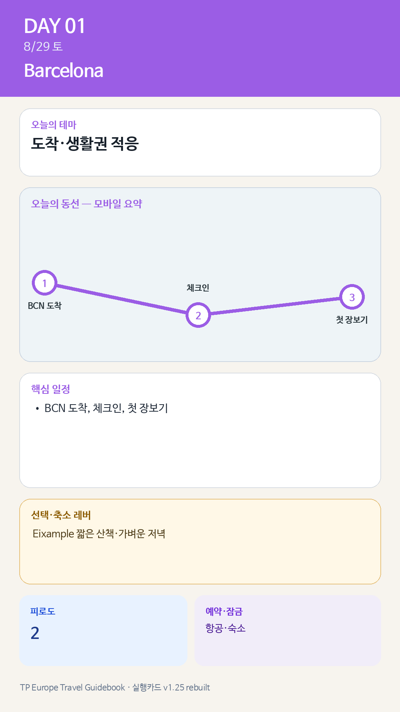

Day 1 · 8/29 토 · Barcelona

카드의 지도영역은 일정 순서를 보여주는 개요이며 내비게이션이 아닙니다. 실제 도보·운전 경로는 Google Maps에서 다시 계산하세요.
시간표
| 15:10–16:30 | 입국·수하물 수령 | 유럽 장기여행 첫 입국일이므로 75–90분의 여유를 둔다. |
| 16:30–17:30 | 공항→숙소 | 짐 2개 이상이면 택시가 가장 현실적이다. Aerobús는 편도 €7.75, 24시간 운행이다. |
| 17:30–18:30 | 체크인·샤워·휴식 | 에어컨, 냉장고, 세탁기 또는 세탁서비스, 다음 날 아침 식재료 보관 상태 확인 |
| 18:30–19:20 | 생활권 산책·첫 장보기 | Mercat de la Concepció가 닫았을 가능성이 있으므로 슈퍼마켓을 이용한다. 물, 샐러드, 과일, 요거트, 빵, 햄, 치즈 구입 |
| 19:30–20:30 | 가벼운 저녁 | 피로하면 숙소 샌드위치. 외식은 Bodega Joan에서 타파스 중심으로만 먹는다. |
피로도
2/5
원고의 일자별 피로도 표기다.
오늘 확인할 것
- 핵심 실행
- 항공 도착·체크인
- 권장 출발
- 실제 도착기준
- 완충
- 입국·수하물·공항이동 120–180분
- 최고 리스크
- BCN 도착지연·체크인
- 우선 삭제
- Eixample 산책·외부저녁
- 대체안
- 숙소 체크인 후 장보기만
- 식사·휴식
- 숙소 인근 간단식
- 잠금 필요
- 항공·숙소·공항이동